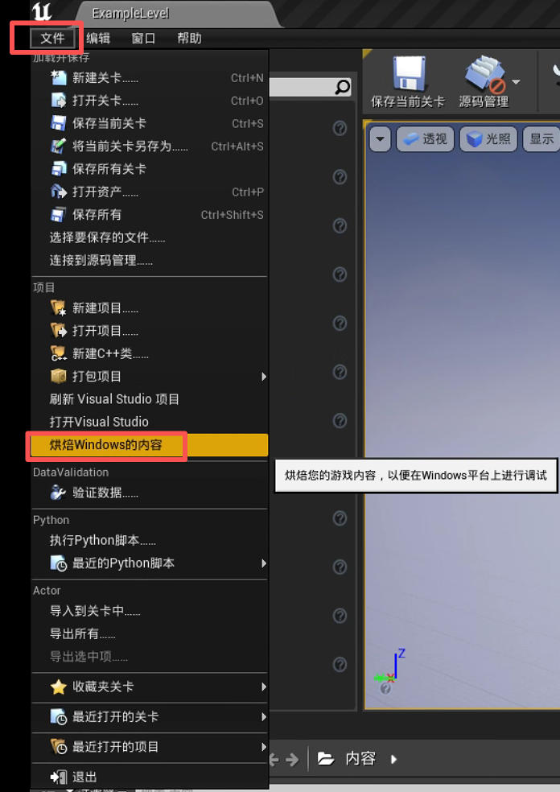
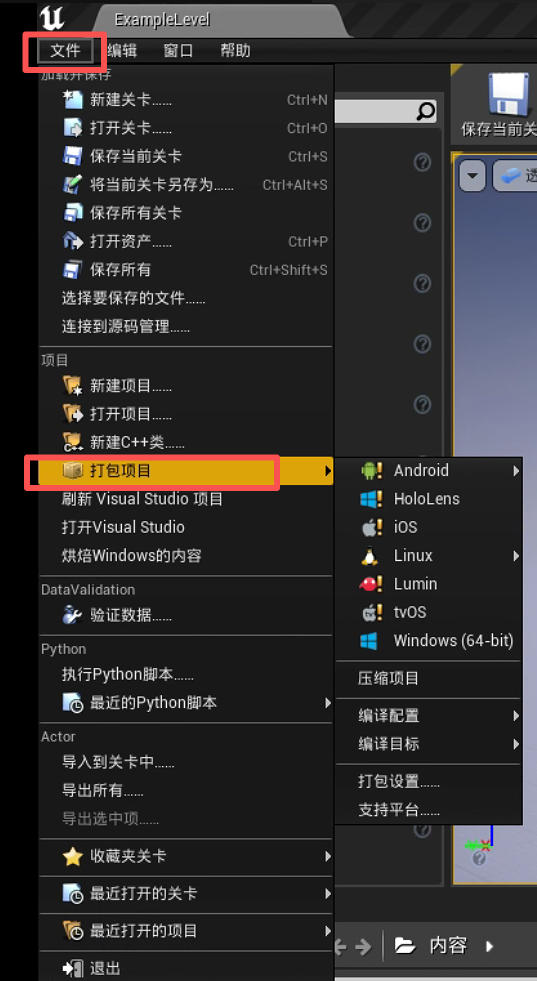
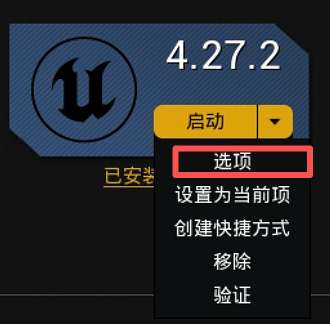
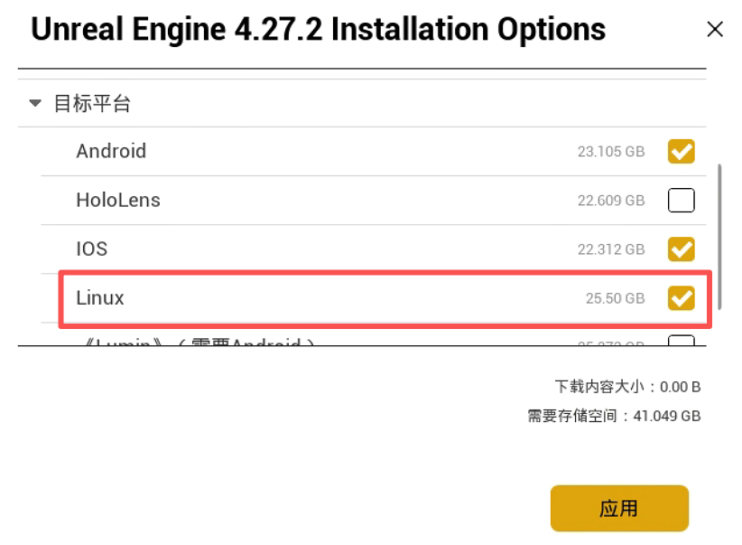
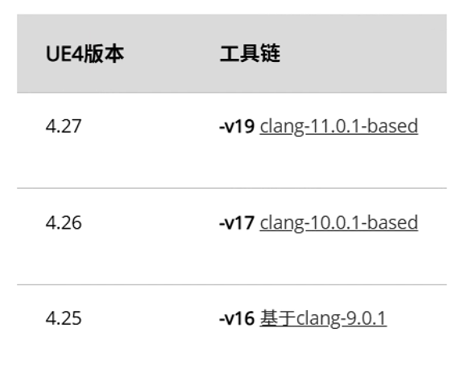
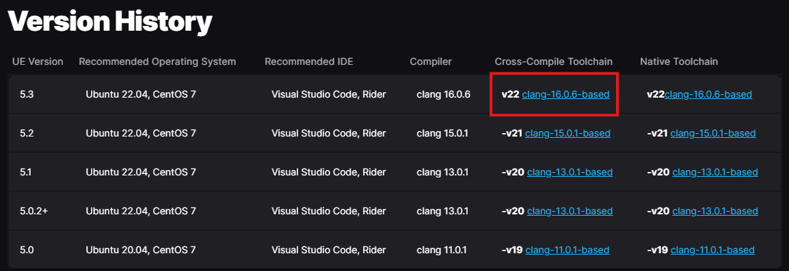
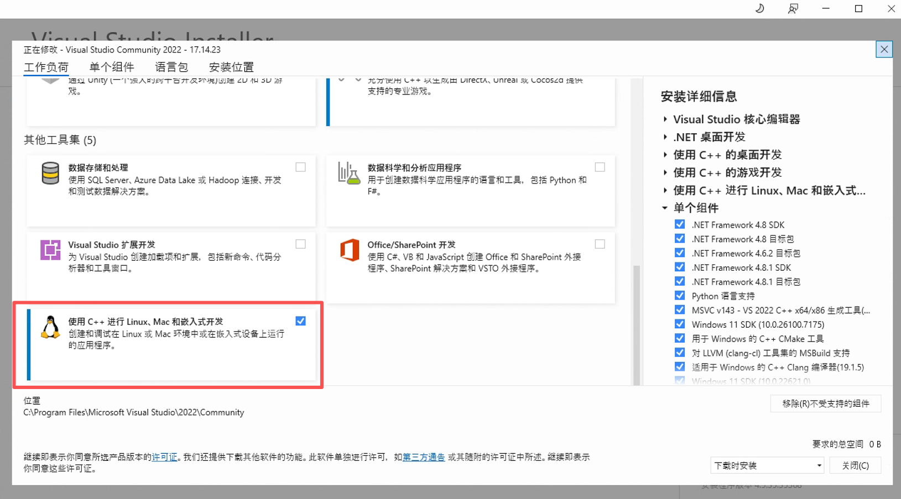

开发环境
本文部分内容参考了此处的资料。
虚幻引擎项目在分发前需要进行打包。此过程会生成引擎可执行文件，并将客户端启动引擎所需的所有资源打包在一起，无需通过编辑器或 Visual Studio 启动。
此过程会将 Holodeck 的 C++ 代码编译，并将 .uasset 文件（包括蓝图！）打包成一个大的 .pak 文件，并创建所需的目录结构。
添加 Underwater 世界
最终的软件包将仅包含已添加到项目中的世界（在编辑器中称为“关卡”）。holoOcean 代码库中仅包含示例关卡。您只需在虚幻引擎编辑器中创建新关卡即可创建新的世界。更多信息请参阅虚幻引擎文档。
注意
由于 HoloOcean 附带的其他打包世界包含付费资源，因此仅供 BYU FRoStLab 的正式成员使用。其他用户需要在 holoocean 代码库中自行开发世界。
内容烘焙
当您在 Visual Studio 中运行 holodeck-engine 时，可能需要烘焙内容以“刷新”holodeck-engine 读取的资源、关卡和蓝图。
从虚幻编辑器：
文件 ➡ 烹饪 Windows/Linux 的内容

打包 Underwater
从虚幻编辑器：
1.文件 ➡ 打包项目 ➡ Windows x64/Linux

2.选择输出目录
我通常选择 holodeck-engine 仓库根目录下的“dist”目录。
注意
双击执行输出目录中的WindowsNoEditor/Holodeck.exe并不能看到默认的场景，执行WindowsNoEditor\Holodeck\Binaries\Win64\Holodeck.exe才能看到默认的场景。想要看到水下机器人需要通过运行 Python 脚本。
附：从 Windows 交叉编译到 Linux
1. 在 Epic Games 启动器中找到您的虚幻引擎版本。右键单击“启动”按钮旁边的箭头，然后选择“选项”。

2. 在“目标平台”下，选择 Linux 并进行安装。

3. UE 4.26 下载交叉编译工具链 -v17（请参阅虚幻引擎的交叉编译文档，UE 4.27 下载 -v19）。

UE 5.3 下载交叉编译工具链 v22（请参阅虚幻引擎的交叉编译文档）。

3.1.
运行D:\UnrealToolchains\v18_clang-11.0.1-centos7\x86_64-unknown-linux-gnu\bin\clang++ -v，验证是否安装成功（注意：需使用绝对路径，%LINUX_MULTIARCH_ROOT%x86_64-unknown-linux-gnu\bin\clang++ -v会提示命令找不到）
4. 修改 Visual Studio 2022 的安装，使其包含“使用 C++ 进行 Linux 和嵌入式开发”组件。

经过这些更改，您应该能够从 Windows 编译 Linux 版本。
该步骤参考UnrealEngine交叉编译。
将文件放置在安装目录中
为了能够调用 holodeck.make()，您需要将打包好的引擎放置在软件包安装位置。
请确保路径中的版本号与 holodeck.util.get_holodeck_version 命令的输出结果一致。
1.将 dist 文件夹的内容复制到上面指定的软件包路径中。
+ worlds
|--+ PackageName
|-- config.json
|-- WorldName-ScenarioName.json
|--+ LinuxNoEditor (发行目录的输出)
| UE4 build output
2.请按照上述文件结构从 holodeck-configs 复制配置。
重要提示
config.json 文件是为 Linux 编写的，必须进行编辑才能在 Windows 系统下正常工作。请将 platform 和 path 字段修改为以下内容：
"platform": "windows"、
"path": "WindowsNoEditor/Holodeck/Binaries/Win64/Holodeck.exe"